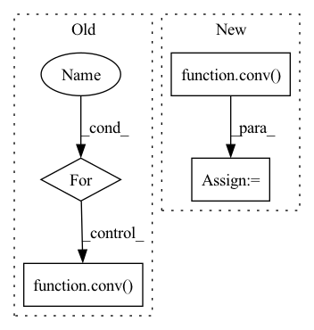

Pattern ID :1443
Before Change
// For undirected graphs, in_degree is the same as
// out_degree.
h = g.in_degrees().view(-1, 1).float()
for conv in self.layers:
h = conv( g, h)
g.ndata["h"] = h
hg = dgl.mean_nodes(g, "h")
return self.classify(hg)
After Change
if name is "GraphConv":
w, b = vars[idx], vars[idx + 1]
conv = self.graph_conv[idx_gcn]
h = conv( g, h, w, b)
g.ndata["h"] = h
idx += 2
idx_gcn += 1In pattern: SUPERPATTERN
Frequency: 3
Non-data size: 4
Instances Fragment ID: 4943355
Project Name: mims-harvard/g-meta
Commit Name: aed3468b5f71c857f788169b34b97a411628930b
Time: 2020-03-02
Author: cosamhkx@gmail.com
File Name: src/learner.py
M Class Name: Classifier
N Class Name: Classifier
M Method Name: forward(3)
N Method Name: forward(2)
M Parent Class: nn.Module
N Parent Class: nn.Module
M File Name: src/learner.py
N File Name: src/learner.py
M Start Line: 53
M End Line: 58
N Start Line: 94
N End Line: 125
Before Change
def forward(self, x: torch.FloatTensor) -> torch.FloatTensor:
for conv in self._convs:
x = conv( x)
return x
After Change
Return types:
* **X** (PyTorch Float Tensor) - Output tensor, with shape (batch_size, num_his, num_nodes, units[-1]).
for conv in self._conv2ds:
X = conv( X)
return X
Fragment ID: 4943343
Project Name: benedekrozemberczki/pytorch_geometric_temporal
Commit Name: 7fd78cd2d93919f7328eaffeb5f1a1bb0b25cc53
Time: 2021-03-24
Author: He_YX@outlook.com
File Name: torch_geometric_temporal/nn/convolutional/gman.py
M Class Name: FC
N Class Name: FullyConnected
M Method Name: forward(2)
N Method Name: forward(2)
M Parent Class: nn.Module
N Parent Class: nn.Module
M File Name: torch_geometric_temporal/nn/convolutional/gman.py
N File Name: torch_geometric_temporal/nn/convolutional/gman.py
M Start Line: 56
M End Line: 58
N Start Line: 105
N End Line: 107
Before Change
v_img = rearrange(v_img, "B h (H W) Ch -> B (h Ch) H W", H=H, W=W) // Shape: [B, h, H*W, Ch] -> [B, h*Ch, H, W].
v_img_list = torch.split(v_img, self.channel_splits, dim=1) // Split according to channels.
conv_v_img_list = [conv( x) for conv, x in zip(self.conv_list, v_img_list)]
conv_v_img = torch.cat(conv_v_img_list, dim=1)
conv_v_img = rearrange(conv_v_img, "B (h Ch) H W -> B h (H W) Ch", h=h) // Shape: [B, h*Ch, H, W] -> [B, h, H*W, Ch].
EV_hat_img = q_img * conv_v_img
zero = torch.zeros((B, h, 1, Ch), dtype=q.dtype, layout=q.layout, device=q.device)After Change
v_img = v_img.transpose(-1, -2).reshape(B, h * Ch, H, W)
v_img_list = torch.split(v_img, self.channel_splits, dim=1) // Split according to channels
conv_v_img_list = []
for i, conv in enumerate(self.conv_list):
conv_v_img_list.append(conv( v_img_list[i]) )
conv_v_img = torch.cat(conv_v_img_list, dim=1)
conv_v_img = conv_v_img.reshape(B, h, Ch, H * W).transpose(-1, -2)
Fragment ID: 4943342
Project Name: feng-lab/pytorch-image-models
Commit Name: 76739a7589ebde1fc6b015e5f9f3e2dc8a73299e
Time: 2021-04-28
Author: rwightman@gmail.com
File Name: timm/models/coat.py
M Class Name: ConvRelPosEnc
N Class Name: ConvRelPosEnc
M Method Name: forward(4)
N Method Name: forward(4)
M Parent Class: nn.Module
N Parent Class: nn.Module
M File Name: timm/models/coat.py
N File Name: timm/models/coat.py
M Start Line: 96
M End Line: 113
N Start Line: 119
N End Line: 137